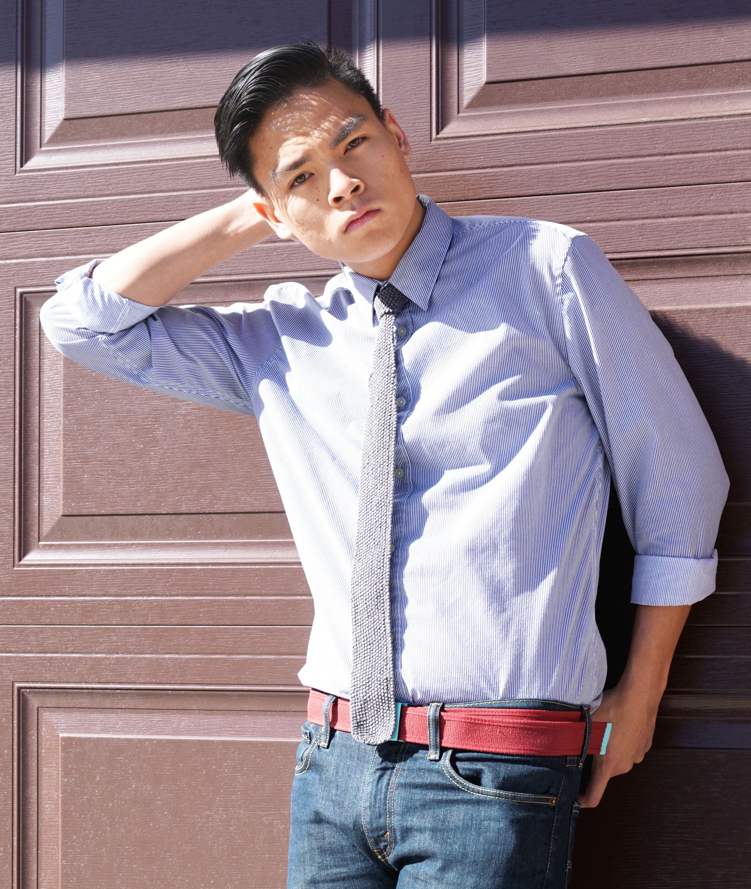

Contact Kyle
If you would like a website, a print, a photoshoot, or even to contact Kyle, send an email to KyleJayMaxwell@gmail.com
Get To Know Kyle
Kyle was born in San Jose, CA but quickly moved to Colorado around 18 months old. The influence of Colorado, can be found in his hobbies. Kyle's hobbies include snowboarding, hiking, biking, and camping, just to name a few. His snowboard stance is regular and uses, a Lib Tech "Skate Banana," ( 2012, Rocker, Green, 151 cm, w/Rome Mob Bindings ) and a Capita "FKN Awesome" ( 2013, Camber, 157 cm, w/Flow Bindings ). You can find him riding his favorite resort Keystone.
The interest of art, Kyle found in middle-school with street artists like Banksy, D*Face, and Shepard Fairey. This love of sencils and graffiti eventually lead into a hunger for more. Kyle almost an art class every semester of highschool if not 2 including drawing, jewerly, ceramics, and even photography. Jewerly and photography were both the prefered median of art for him. Kyle particularly enjoyed the film cameras, with black and white film. Here he was able to develop photos in the dark room and just felt like home. The photo had to go through a long process just to see if it need changing. This eventual liking to cameras transfered to digital cameras along with the editing process on the computer. The computer opened so many doors to Kyle, eventually starting the design path.
A sense of adventure has always been in Kyle. From exploring the property around his childhood house mountains, to being the first one to volunteer. The sense of adventure lead to Kyle's interest of european things, such as soccer and fashion. Kyle is a proud supporter of Arsenal F.C. (COYG!) This interest turned into a passion to travel the world, when Kyle went to Paris, and Denmark. Since then he has also been to Amsterdam.